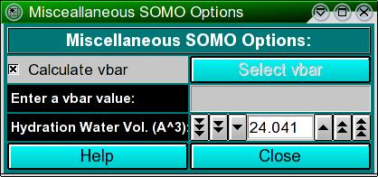

| |
Manual |

In this module, you can set some options affecting both the model building and
the hydrodynamic computations stages. The Calculate vbar checkbox
allows the computation of the partial specific volume (vbar) in standard
conditions (water @ 20°C) of the structure from its composition, using the
residues' values stored in the residue table
(default: active). Alternatively, a vbar value (either computed by
other means or measured) can be entered in the Enter a vbar value (cm^3/g)
field. The Select vbar button will instead load a vbar value from XXXX.
The Hydration Water Vol. (A^3) field sets the volume of the water
of hydration molecules, which has been found (Gerstein and Chothia, Proc. Natl.
Acad. Sci. USA 93:10167-10172, 1996) to be on average 24.5 A3,
different from that of either bulk (29.7 A3) or isolated (11.5
A3) water molecules (default: 24.041 A3).
This document is part of the UltraScan Software Documentation
distribution.
Copyright © notice.
The latest version of this document can always be found at:
http://www.ultrascan.uthscsa.edu
Last modified on August 26, 2008.
{kind=link}